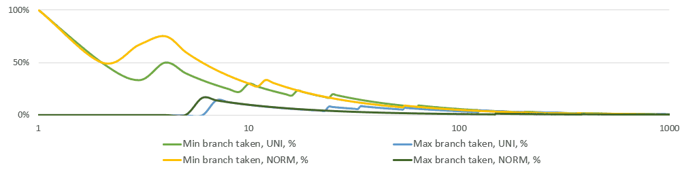
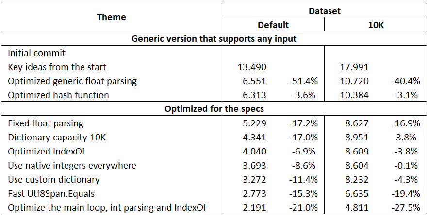

At the start of the New Year, GitHub exploded with The One Billion Row Challenge started by Gunnar Morling. Originally it was a Java-only competition, but others wanted to have fun as well. Please read these links first if you do not know about this challenge and its rules.
I also fell into this rabbit hole. I wrote one of the fastest managed 1BRC implementation that performs well not only on the specific dataset that everyone was optimizing for but also on more generic data. Furthermore, my results were very close to the C++ implementation for the default data and were faster in the case of more complex data.
In the Results section below I present different timings for different languages and datasets. In My Optimization Journey, I show the history of my optimizations and performance timeline. Then I discuss why .NET is fast and easy to use for that kind of code. Finally, I describe how I write High-performance .NET code as a daily routine at my work.
Results
In addition to my code, I’ve set up a dedicated benchmarking server in my homelab and invested significant effort in comparing the performance of various implementations. For .NET, I measured the performance of the same code under both JIT and AOT compilation. I did the same for Java, but only when the native image was mentioned in Java results. The server maintains a fixed CPU frequency, ensuring consistently stable results. Refer to the Methodology section for further details.
Detailed avg/min/max/sigma results
Unsurprisingly, the native implementations yield the fastest results for the default dataset. However, challenging common belief, .NET outpaces them on a larger 10K dataset. Nevertheless, the relatively modest margin between the native and both the .NET and Java versions is worth noting and appreciating.
In the end, all results should converge to some physical limit and the ideal CPU utilization. Then the interesting question will be at what price such code was developed. For me, it was quite easy to reach the current point and my code is very simple.
Extended dataset
The default data generator has a small number of station names with a max length below the AVX vector size. Both of these properties allow for many extreme performance gains. However, the specs say that there may be up to 10K unique stations with up to 100 UTF8 bytes in their names.
“I encourage contestants to try it out and use as the optimization target. It’s unquestionably a kick to see oneself at the top of the leaderboard, but it’s more fun (and useful!) to design a solution that works well beyond the 416 station names of max length 26 chars.”
by Marko Topolnik, who submitted a more generic generator.
To make a fairer comparison I used two datasets:
- The original default one was generated with create_measurements.sh. It is 12+GB in size. This dataset has only 416 station names with a max length of 26 chars.
- The extended dataset with 10K random weather station names that could be as long as the specs allow. It is generated with create_measurements3.sh and is 17+GB in size. See the quote with the link above for details.
YOLO optimizations
Two results are crossed out in the table. They may work great for the default and the 10K datasets. They may even work for all weather stations in the world. However, they do not follow the specs. They assume that a hash of a station name is unique and use it for lookup, without checking for collisions.
Alexandre Mutel (xoofx) calculates here an FNV-1A hash touching every byte of the name, so it is not trivial to just use a prefix for hash collisions. He then uses that hash as a unique key in his measurements table here. He comments in the code: “With a 64bit hash, we should avoid any collisions for the entries that we have.” (emphasis is mine) This code works on a fixed set of existing weather station names. The 64-bit space is huge, and collisions are unlikely even for new stations. However, the probability of collisions is not negligible. A collision attack would be non-infeasible if the stakes were higher, e.g., in a banking app.
Below is our discussion about that. I tend to agree if and only if the assumptions are somehow enforced (notifications about new stations and verification of the hash function after that). Though I think no one will notice a collision when it happens but only when wrong results become visible. Assumptions are easy to forget and code could be reused in unexpected places.
me: I have just read your code and the hash trick. Would you use it in a bank if the file was
account_holder_name;account_delta? Frankly I did not even pay attention and would not think to cut corners like that. But it turns out many implementations did that.xoofx: Nope, but these are weather stations right, so that’s ok. 🙂 Also, in this kind of cases, you could always verify things everytime there is a new station name coming from another source (you get a notification) and verify that your hash won’t ever collide. By the time does collide, you will be able to change your plan, use a stronger different/safer hash…etc, it will be probably in a million of years, if you have enough cities. Until then, profit.
Ragnar Groot Koerkamp wrote in Rust the fastest implementation overall. The only problem is that it would not be correct if a station name is not present in the first half of the file. He does crazy impressive things, like generating a perfect hash function on the fly. But it would be trivial to make the result incorrect just by appending the input file with a new station name. And apparently, he also uses the hash-as-id trick. See the details in our Support city names up to 100bytes discussion.
Funny enough, the last messages in both discussions in either by @nietras or link to his Tweet:
I believe the xoofx version of 1BRC does the hash trick (comparing by hash only not by actual station name) that was deemed not acceptable in Java. That approach definitely is a lot faster as also seen in Java. https://t.co/WFQtuLZ5VK
— nietras 👾 (@nietras1) January 13, 2024
I believe that in addition to the specs, the results from @nietras speak for themselves and remove any doubts about validity of such optimizations: he did even faster without them!
For my part, I tried hard to write the most generic code from the start. The name could be of any length, the number could be any non-scientific float, and the line endings could be \r\n. I was even able to beat the top Java result with such code, even if for a short period. After Java became faster again (also for a short period) I looked at the specs, but not the data. For me, the limit on the number range was the most important, but station names could still be of any length. The code would survive collisions, but there should be few of them for real-world input of weather station names.
However, I must admit that it is possible with my implementation to create artificial data that will collide and turn O(1) hash table lookup into O(N) linear search (aka hash flooding). But even in this case, it would still work. If I just use 0 as a hash code for all names, the code finishes in 1 minute 23 seconds for the default dataset. And for the 10K dataset I am not sure what is better: no result in the time I am patient to wait for or a wrong result.
Methodology
The performance is measured on a quiet 6C/12T Alder Lake CPU fixed at 2.5 GHz (disabled turbo), 32GB DDR4 3200, and Debian 12 in a privileged LXC container in Proxmox. With a fixed base frequency the thermals are perfect (< 35°C) and no throttling happens even under sustained 100% load.
LXC is a Linux container similar to Docker but running a full-blown OS. It has very little overheads for CPU/RAM-bound tasks. Proxmox is an open-source virtualization management platform that is very productive and addictive for homelab use cases.
The timings are measured with the hyperfine --warmup 1 --runs 5 './1brc path/to/file'. The results are very stable since there is no noise in the system. See the link below the results table for more min/max/sigma statistics.
For my and Cameron Aavik results, I ran the benchmark multiple times and they are indeed ranked differently on the default data depending on JIT vs AOT. For my code AOT is slightly detrimental, but for the other solution AOT improves the performance.
My Optimization Journey
I’ve been coughing for more than 2 weeks. It was so bad around the New Year that I took January 2-3 off. On January 3rd, I was drinking hot tea with ginger and honey and reading Twitter. I saw a tweet from Kevin Gosse about this challenge and I liked the idea. But I also knew that it might be an entrance to a very deep rabbit hole, with faint memories of wasted time at its bottom.
Yet the task was so simple. I decided to measure how much time it would take me to write a very simple yet still fast implementation. It was 1:01 PM and by 3:17 PM I had the first version that would finish in 13.5/18.0 seconds for the default/10K datasets on my bench machine. Then I started to optimize the heck out of it.
Here and below I rerun the commits on my bench setup, the numbers are comparable to the JIT results in the table above. At the end of the section, you can find the performance timeline.
Generic version for any input
At first, I did not even try to optimize for the specs. Just a name and a floating point number separated by a semicolon, with a measurement per line that ends either with \n on Linux or \r\n on Windows. Repeat 1B times.
Key ideas from the start
Files as of commit | Diff with previous | Time: 13.490 / 17.991 (10K)
The key ideas of my implementation did not change until the very end. The devil was in the tiniest details.
Memory-mapped files
It was obvious to use mmap because I used it multiple times before in high-perf scenarios such as IPC ring buffer. It is really simple to use and all the complexity is managed by OS. There was a huge debate in the database community recently about using mmap vs manual memory management,
aka LMDB vs others. By the way, I am a big fan of LMDB and even authored the fastest .NET wrapper for it.
Nevertheless, to avoid slow munmap time I tried it without mmap here. The results were visibly slower, but not too much. Just copying the file in memory takes ~200 msec at max CPU bandwidth plus inevitable overheads and that shows.
Utf8Span
Utf8Span is probably the most important idea for great performance. It is a struct that stores the pointer and the length of a UTF8 segment in a mapped file.
The data is never copied, even when the span is used as a key in a dictionary. It is never converted from UTF8 to UTF16 until the very end when sorting and printing the final result.
1public readonly unsafe struct Utf8Span : IEquatable<Utf8Span>
2{
3 private readonly byte* _pointer;
4 private readonly int _len;
5
6 // ctor
7
8 public ReadOnlySpan<byte> Span => new(_pointer, _len);
9
10 public bool Equals(Utf8Span other) => Span.SequenceEqual(other.Span);
11
12 // It was that lazy! Did not even used freely available additional entropy from _len in the hash.
13 // But it worked quite well with the default dataset.
14 public override int GetHashCode()
15 {
16 // Use first bytes as the hash
17 if (_len > 3) return *(int*)_pointer;
18 if (_len > 1) return *(short*)_pointer;
19 if (_len > 0) return *_pointer;
20 return 0;
21 }
22
23 public override bool Equals(object? obj) => return obj is Utf8Span other && Equals(other);
24 public override string ToString() => new((sbyte*)_pointer, 0, _len, Encoding.UTF8);
25}
For efficient hash table lookup, Equals and GetHashCode are the most important methods.
The Span.SequenceEqual()
API is hard to beat in general, but the call is not inlined and is too heavy for small data. Later I found a simple way to speed it up,
but that required changes to the chunking as well as to Equals itself.
Avg/Min/Max efficient update
To calculate a running average we need to store the sum and the count. Nothing interesting there and we all know that since programming kindergarten, don’t we?
Updating Min/Max is even simpler from the math side. Just check if the new value is smaller/bigger than the previous min/max and update them accordingly.
However, CPUs do not like ifs and branch misprediction is expensive. Yet, if you think a little bit more statistically it becomes obvious that
the chances of actually overwriting min/max fall rapidly with every observation for any stationary process. Even stock prices, which are not stationary, do not hit all-time highs daily, monthly, or annually. Temperatures are supposedly stable “on average” and are stationary at least on the scale of centuries.
Below is a simple simulation of the running share of min/max branches taken. Note that the X-axis is logarithmic. Just after 10 observations on average neither of the branches is taken.

This analysis tells us to use branches instead of heavier bitwise branchless calculations. I tried branchless options eventually, but I had the statistical hunch and ifs in the first as well as the final implementations. Branchless code makes the execution backend-bound (as seen in perf stat).
1public struct Summary
2{
3 // Note that initially they were not even floats
4 public double Min;
5 public double Max;
6 public double Sum;
7 public long Count;
8 public double Average => Sum / Count;
9
10 public void Apply(double value, bool isFirst)
11 {
12 // The first value always updates min/max
13 if (value < Min || isFirst)
14 Min = value;
15 if (value > Max || isFirst)
16 Max = value;
17 Sum += value;
18 Count++;
19 }
20}
.NET Default dictionary
Dictionary<TKey,TValue> is almost always good enough and is not the first thing to worry about. In my case it was Dictionary<Utf8Span,Summary>. .NET’s JIT inlines calls to Utf8Span’s Equals and GetHashCode without any additional efforts from my side.
There is a great but not widely known utility class CollectionsMarshal for high-performance access to dictionary values by reference. Its method GetValueRefOrAddDefault is particularly helpful
for updating the summary data.
By taking a reference to a summary value we avoid copying and updating it to/on the stack and copying it back to the dictionary using the conventional APIs.
Remember that Summary is a mutable struct and calling a method on a reference to it does not cause a copy. Also imagine the
needless overheads if Summary was a class: even with the same GetValueRefOrAddDefault one would have to check for null and create new instances.
A default struct is ready to store data without additional hops.
1// No struct copying
2ref var summary = ref CollectionsMarshal.GetValueRefOrAddDefault(result, nameUtf8Sp, out bool exists);
3// For a class: branching, allocations, code size. Thanks, but no thanks. Value types rule in .NET.
4// if (summary is null) summary = new Summary();
5summary.Apply(value, !exists); // this method is shown above
Bytes parsing
For parsing bytes I just used .NET’s Span.IndexOf and double.Parse() APIs.
Everything else
The performance depends only on ProcessChunk inside each thread. For everything else, we may write whatever
lazy or simple code we want. E.g. I like LINQ/PLINQ pipelines, especially when I am able to create a long and lazy
computation. But I may easily break such a pipeline with a for loop without thinking much because it does not matter
neither for performance nor for readability. E.g. in the actual first commit the aggregation was in a loop just
because it was easier to think about, but when it was done it was copy-pasted to the .Aggregate() method.
I was surprised that some people were ready to argue about the mere usage of (P/)LINQ just because they have heard that it is slow. They obviously do not know .NET well and do not distinguish between the hot and the cold paths.
1var result = SplitIntoMemoryChunks() // Break the entire mmap into equal chunks for each CPU
2 .AsParallel().WithDegreeOfParallelism(_threads) // Distribute to all CPU cores
3 .Select((tuple => ProcessChunk(tuple.start, tuple.length))) // Do ProcessChunk work on each CPU.
4 .Aggregate((result, chunk) => { /* Merge results ... */ })
5 ;
Optimized float parsing
Files as of commit | Diff with previous | Time: 6.551 / 10.720 (10K)
After profiling the code I found that double.Parse() took ~57% of the run time. Dictionary lookup took ~24%.
I added a general-purpose parser for a floating point number that had a happy path but was falling back to the original on any detected irregularity. All [-]?[0-9]+[.][0-9]+ floats would hit the happy path with this implementation.
That almost doubled the performance! There were some other micro-optimizations, just click Diff with previous link at the beginning of each section to see all changes.
1[MethodImpl(MethodImplOptions.AggressiveInlining)]
2private double ParseNaive(ReadOnlySpan<byte> span)
3{
4 double sign = 1;
5 bool hasDot = false;
6
7 ulong whole = 0;
8 ulong fraction = 0;
9 int fractionCount = 0;
10
11 for (int i = 0; i < span.Length; i++)
12 {
13 var c = (int)span[i];
14
15 if (c == (byte)'-' && !hasDot && sign == 1 && whole == 0)
16 {
17 sign = -1;
18 }
19 else if (c == (byte)'.' && !hasDot)
20 {
21 hasDot = true;
22 }
23 else if ((uint)(c - '0') <= 9)
24 {
25 var digit = c - '0';
26
27 if (hasDot)
28 {
29 fractionCount++;
30 fraction = fraction * 10 + (ulong)digit;
31 }
32 else
33 {
34 whole = whole * 10 + (ulong)digit;
35 }
36 }
37 else
38 {
39 // Fallback to the full impl on any irregularity
40 return double.Parse(span, NumberStyles.Float);
41 }
42 }
43
44 return sign * (whole + fraction * _powersPtr[fractionCount]);
45}
Optimized hash function
Files as of commit | Diff with previous | Time: 6.313 / 10.384 (10K)
It was no longer as lazy as in the initial version, it included the length combined with the first bytes. More than 3% gain for free.
There were some comments and measurements for the worst-case scenario if the hash is always zero and we use the linear search.
1public override int GetHashCode()
2{
3 // Here we use the first 4 chars (if ASCII) and the length for a hash.
4 // The worst case would be a prefix such as Port/Saint and the same length,
5 // which for human geo names is quite rare.
6
7 // .NET dictionary will obviously slow down with collisions but will still work.
8 // If we keep only `*_pointer` the run time is still reasonable ~9 secs.
9 // Just using `if (_len > 0) return (_len * 820243) ^ (*_pointer);` gives 5.8 secs.
10 // By just returning 0 - the worst possible hash function and linear search - the run time is 12x slower at 56 seconds.
11
12 // The magic number 820243 is the largest happy prime that contains 2024 from https://prime-numbers.info/list/happy-primes-page-9
13
14 if (_len > 3)
15 return (_len * 820243) ^ (*(int*)_pointer); // Only added the part before ^
16
17 if (_len > 1)
18 return *(short*)_pointer;
19
20 if (_len > 0)
21 return *_pointer;
22
23 return 0;
24}
After that change, I started looking into what specs could be useful for performance.
Using the input specs
The rules of the challenge
say that the name is always less than 100 UTF8 bytes, there are maximum 10K unique names,
the temperature is between -99.9 and 99.9 ([-]?[0-9]?[0-9][.][0-9]) and lines always end in just \n.
I think it is just fine to optimize for the specs. There could be real weather stations that produce such data with the code that was written before my birth. However, I do not like when people start to optimize for a particular dataset/generator. Therefore for this comparison, I did not accept implementations that could not handle the 10K dataset. Even when using the specs my code supports any name length.
Parse numbers as integers
Files as of commit | Diff with previous | Time: 5.229 / 8.627 (10K)
Just using the fact that the temperature is between -99.9 and 99.9. We have only the 4 cases and could optimize for that:
Set dictionary capacity
Files as of commit | Diff with previous | Time: 4.341 / 8.951 (10K)
It was so dumb! But was like a canned food when I had little to eat for performance. A single line / 5 characters change for a 17% gain.
Hahaha, I'm so unused to write one-off programs. Zero-alloc and high-perf in steady-state... but init time usually not that important. So in #1brc just setting big enough capacity to dictionaries is such a huge win. 🤦♂️🙀
— Victor Baybekov (@buybackoff) January 6, 2024
Optimized IndexOf
Files as of commit | Diff with previous | Time: 4.040 / 8.609 (10K)
Manual AVX2 search for a byte in a span with a fallback to Span.IndexOf when the remaining part of a chunk is smaller than 32 bytes.
1// Inside Utf8Span
2[MethodImpl(MethodImplOptions.AggressiveInlining)]
3internal int IndexOf(int start, byte needle)
4{
5 if (Avx2.IsSupported)
6 {
7 var needleVec = new Vector<byte>(needle);
8 Vector<byte> vec;
9 while (true)
10 {
11 if (start + Vector<byte>.Count >= Length)
12 goto FALLBACK;
13 var data = Unsafe.ReadUnaligned<Vector<byte>>(Pointer + start);
14 vec = Vector.Equals(data, needleVec);
15 if (!vec.Equals(Vector<byte>.Zero))
16 break;
17 start += Vector<byte>.Count;
18 }
19
20 var matches = vec.AsVector256();
21 var mask = Avx2.MoveMask(matches);
22 int tzc = BitOperations.TrailingZeroCount((uint)mask);
23 return start + tzc;
24 }
25
26 FALLBACK:
27
28 int indexOf = SliceUnsafe(start).Span.IndexOf(needle);
29 return indexOf < 0 ? Length : start + indexOf;
30}
Use native integers everywhere
Files as of commit | Diff with previous | Time: 3.693 / 8.604 (10K)
In the native world, it is normal to use size_t native size type for offset and length, because CPUs are faster to work with native words.
In .NET most public APIs accept a 32-bit int for that. CPUs have to expand it to nint every time. But internally .NET itself uses
native integers.
E.g. here is the code with comments for SpanHelpers.SequenceEqual:
1// Optimized byte-based SequenceEquals. The "length" parameter for this one
2// is declared a nuint rather than int as we also use it for types other than byte
3// where the length can exceed 2Gb once scaled by sizeof(T).
4[Intrinsic] // Unrolled for constant length
5public static unsafe bool SequenceEqual(ref byte first, ref byte second, nuint length)
6{
7 bool result;
8 // Use nint for arithmetic to avoid unnecessary 64->32->64 truncations
9 if (length >= (nuint)sizeof(nuint))
Use a custom dictionary
Files as of commit | Diff with previous | Time: 3.272 / 8.232 (10K)
Up until this point, I still had the default .NET dictionary. But since the specs say there are a maximum of 10K unique names I could use this information.
Details TBD
Fast Utf8Span.Equals
Files as of commit | Diff with previous | Time: 2.773 / 6.635 (10K)
I spent some effort trying to beat Span.SequenceEqual for small size. Tried to copy parts of the implementation and inline it, but nothing worked.
Then I had a crazy idea to allow the code reading beyond Utf8Span.Length. Then I could just use an AVX2 vector, set the bytes after the length to zero,
and compare the vectors. That would be totally unsafe and would segfault, but only for the last single observation from 1 billion of them.
To make it safe I ensure that the last big chunk does not end at the end of the file, but at the start of the new line at least 4xVector256<byte>.Count
before the end. I copy the remaining part to a memory buffer that is much bigger than the data and is safe to use.
Optimize the inner loop
Files as of commit | Diff with previous | Time: 2.204 / 4.811 (10K)
- Faster integer parsing combined with new line index calculation;
- Faster IndexOf that also relies on reading beyond
Utf8Span.Length; - Faster ProcessChunk loop.
Details TBD
Performance Timeline
The performance evolution following each change discussed above.

.NET is very fast
.NET is very fast. And it is becoming even faster with every new release. Some people joke that the best performance optimization for .NET is just updating it - and that is probably true for the majority of its users.
With every release, Stephen Toub from the .NET team publishes a humongous blog post with every tiny performance improvement since the last release. The sheer size of these posts indicates that they do care about performance improvements a lot.
Unsafe
.NET allows you to work with pointers directly. That makes it C-like. If the inner loop is CPU-bound all arrays could be pinned and accessed without bound checks or we could work with native memory directly, like in this 1BRC case.
Alternatively, .NET offers a newer Unsafe
class that essentially does the same thing as the old unsafe keyword + pointers do but with managed references. That allows to skip pinning
arrays and still be GC-safe.
The presence of unsafe options does not make the code unsafe automatically. There are “Unsafe Unsafe” and “Safe Unsafe”.
E.g. if we ensure array bounds but cannot make JIT elide the bound check (as in the custom dictionary case and GetAtUnsafe)
then why should we pay the bound check costs? In this case, it would be Safe Unsafe. With careful usage locally unsafe code
could turn into a globally safe application.
Easy Intrinsics
.NET has SIMD intrinsics that are very easy to use. We could use SSE2/AVX2/BMI APIs directly
or use cross-platform cross-architecture Vector128<T>/Vector256<T> types.
Or an even more universal Vector<T> type that hides even the vector size and seamlessly works on old .NET runtimes.
The Range of .NET
.NET does not force us to write low-level unsafe SIMD code every time. When the performance does not matter we could just use LINQ. It is fine. Even here in 1BRC challenge. Really.
C# range as a language (ability to be both very high level and low level) is unmatched 😍.#dotnet #csharp https://t.co/1SrShm8CZp
— David Fowler (@davidfowl) January 6, 2024
Both C# and F#
F# showed decent performance on both default and 10K datasets. I had complicated relationships with F#. A long story in this blog tells why I left it for C#. It was mostly performance (both the produced code and tooling), even though I love the syntax and the F# community.
However, I am not surprised that F# is quite fast. It has been improving quite substantially and maybe one day I will use F# again.
E.g. resumable code and resumable state machines are a very powerful feature I have been looking at. The .NET-native support for task { ... } computation expression is using this feature.
Here it is impossible for me not to mention that I also improved F# performance a lot by making
its core Mapand Set data structures (AVL-tree internally) substantially faster
in a series of commits in 2020.
Of course, Frank Krueger’s F# implementation is far from idiomatic functional F# code, as the author admits. But if you are already using F# code and do not want to touch C#, you could write C-like code in F# as well. Just do not overdose, hide it inside a pure function and tell no one. 😉
High-performance .NET code as a daily routine, aka come work with us
At ABC Arbitrage, I have an opportunity to work with performance-critical .NET code daily. The company migrated to .NET from C++ many years ago and that was a great success in terms of maintainability, flexibility, performance, and costs. Optimizations such as seen in 1BRC are not uncommon in our code. But of course, not all our code is like that. We also have a lot of nice readable modern C# and even LINQ is not banned unless it is on a trading path. We are always up to date with the latest .NET developments and we usually have a new major version in production within a couple of weeks from its release (i.e. we have been on .NET 8 for “a long time” already).
We use and contribute to a lot of open-source projects at ABC and we maintain some. The .NET port of the famous high-performance inter-thread messaging library Disruptor-net, which is maintained by Olivier Coanet, is at the core of our trading platform and handles every market tick and every trading order. I contributed several micro-optimizations similar in spirit to the ones discussed above. A lightweight peer-to-peer service bus Zebus, with Lucas Trzesniewski as the main contributor, has been in the production environment at ABC Arbitrage since 2013, handles hundreds of millions of messages per day, and orchestrates the whole infrastructure. A logging library ZeroLog, with contributions from Lucas, Romain Verdier, and others, is so fast and zero-alloc that we may use it easily even on the most latency-sensitive path. There are other projects in the company repo and many more contributions from our current and former colleagues. We truly embrace open source 😍
If you’re into writing high-performance code using modern .NET and fancy a bit of fun in Paris, why not join us? We have several open .NET positions. And if you’re feeling spontaneous, send us an application at dotnet📧abc-arbitrage.com.